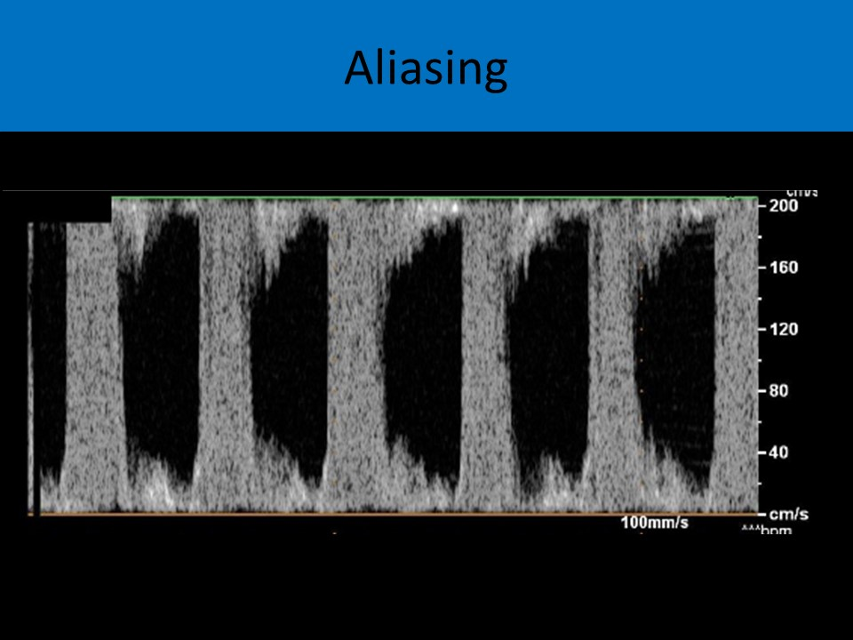

.jpg)
SONOGRAPHIC TECHNIQUES AND GENERAL INFORMATION
CONSOLE CONTROLS - 2D IMAGING:
Transducer Frequency:- Lower frequencies used for obese patients because it provides the best penetration
- Increased penetration = decreased resolution
- Axial resolution, lateral resolution, and beam width improve with increasing frequency
- The best frequency transducer for an averaged sized patient in the second trimester is 5-8 MHz
- A curved phased array transducer is preferred due to the size of the near field and wide angle of the far field
- 2D imaging is best when the beam is at a 90 degree angle to the structure
- Doppler evaluation is best when the flow is at a 0 degree angle to the US beam (cursor line)
- Reflected waves are processed as a higher frequency than the transmitted waves
- Harmonic imaging improves spatial resolution with the greatest effect on lateral resolution
- Eliminates lobe artifact and near field artifact
- Reduces reverberation artifact
- AKA spatial compounding
- Uses electronic beam steering in a transducer array
- Acquires several overlapping scans of a structure from different views/angles
- Scans are averaged to form single image in real time
- Used for reduction of speckle, clutter, and other acoustic artifacts
- Creates a smoother image with better visualization of tissue margins
- Reduces shadowing and enhancement artifacts
- A decrease in image depth will increase pulse repetition frequency which increases frame rate and line density
- Increasing the rejection or suppression settings
- Can be used to increase the image contrast and increase the appearance of shadowing artifact
- The appearance of low level reflections will be reduced
- Rejection is used to manipulate the reflected data and has no effect on attenuation
- Increasing the rejection removes low amplitude noise and signals
- Contrast resolution improves with reduced rejection settings
- Affect the number of shades of gray displayed on the image
- Change the contrast level of the image
- Increased/larger dynamic range=decrease image contrast
- Improve the lateral resolution on the image by adding focal zones
- Increasing the number of focal zones will degrade temporal resolution
- Changing the gray map before the image is stored in memory
- Making the change while scanning live
- Changing the gray map after the image is stored in memory
- Making the change while viewing stored images
- Used to form the sector shaped field of view for a phased array transducer
- Voltages are timed to excite the PE crystals in a concave fashion with the outer crystals hit first and working inward
- Can be adjust by the Sonographer by changing the size of the field of view
- Receiver gain affects the amplitude of a reflected of sound wave
- Increase the strength of all of the reflected signals regardless of reflector depth
- Increase or decrease the brightness of all of the echoes displayed
- Has NO effect on beam intensity
- Always adjust gain first when image is too dark
- If image is too bright, adjust output power first
- Directly related to beam intensity
- Power can be affected when the transmit gain control is altered
- ALARA Principle: As Low As Reasonably Achievable refers the exposure to ultrasound
- Minimizing the number of standard images taken on each patient will reduce the exam time
and exposure - Reduce output power whenever possible (when image is too bright)
- Reducing frequency and gain do not affect the intensity/exposure time
- M-mode displays the motion of a structure over time
- Essential in fetal echo for evaluating arrhythmia
- Also used to assess ventricular wall thickness and chamber size
- Fractional shortening provides an index of myocardial performance; normal >25%
- M-mode is preferred over PW Doppler in early pregnancy because Doppler uses higher intensity
ultrasound
IMAGE RESOLUTION:
Temporal Resolution:- The ability to detect that an object has moved over time (requires moving structure)
- Determined by frame rate
- Lower frames rates = degraded temporal resolution
- Decreased temporal resolution cause the image to “ drag” with a visible difference in the motion of the probe and the display of the structure
- Improves with decreased number of focal zones, smaller field of view, decreased image depth and decreased line density
- Reducing the size of the field of view improves temporal resolution
- Cannot be evaluated with a tissue phantom or AIUM test object, must use a fluid filled phantom to evaluate
- Related to the slice thickness or beam thickness
- Thinner slices offer improved elevational resolution
- The ability to resolve two closely spaced structures which lie parallel to sound beam
- Axial resolution=1/2 spatial pulse length
- Shorter pulse lengths are produced within a short pulse duration
- The shorter the spatial pulse length, wavelength, period and pulse duration, the better the axial resolution
- Improves with increasing frequency
- The ability to resolve two closely spaced structures which lie perpendicular to the sound beam
- Varies with beam width
- Harmonic imaging improves spatial resolution with the greatest effect on lateral resolution
- Improves with increasing frequency (increase frequency= decrease the depth of penetration)
- The best at the focal point
CONSOLE CONTROLS - DOPPLER:
Color Doppler:- A pulsed wave Doppler technique
- Evaluate the presence and direction of flow
- Demonstrates average velocity of the flow
- Assigned to the Doppler shift based on the number of moving blood cells
- Blood cells have a lower reflectivity than soft tissue cells, which leads to limitations for Color Doppler evaluation of deep structures seen on the 2D exam
- Improved by increased probe frequency, sensitivity, packet size
- Preferred method of evaluating the extent of valvular regurgitation in a fetus (not spectral Doppler)
- Perceived color used to demonstrate direction
- Reds and blues
- Determined by direction ( positive or negative) of the shift
- Demonstrates no color when the flow is perpendicular to the US beam because no Doppler shift is detected at 90 degrees
- Brightness of the color displayed
- Determined by the amplitude of the reflection
- DIFFERENT FROM SAMPLE SIZE
- More pulses are in larger packet sizes that produce more accurate color velocity display with degraded temporal resolution
- Changing packet size can help find the best balance of accuracy versus temporal resolution
- Refers to the area being evaluated with color Doppler
- Operator adjustable
- The sample size and scale are related to the amount of color fill in the vessel
- The larger the sample size and greater the scale, there will be a corresponding decrease in the color fill
- As the angle of Doppler insonation increases from 0-90 degrees, it will result in a decrease in color flow
- Smaller sample sizes improve accuracy of color display and increase the frame rate
- The more superficial a structure, the better the color flow display
- Deeper structures require a lower PRF and result in slower frame rates
- Autocorrelation calculates the mean flow velocity of the blood cells
- Color Doppler displays the mean flow velocity of the red blood cells, while PW Doppler displays the peak velocity of the red blood cells
- An increase in the color flow velocity scale will increase the pulse repetition frequency
- A decrease in color flow velocity scale will decrease the pulse repetition frequency
- Refers to the way the machine processes information to superimpose color over the 2D image
- Adjust the threshold setting
- Determine if a pixel is displayed as shade of gray, black or white or as a color
- Lower threshold settings display less color (low color priority)
- Higher threshold settings display more color (high color priority)
- Low color priority displays less color on the image
- Necessary to minimize color ghosting and improper placement of color on structure walls
- Decrease filter settings, decreased color scale and increased color gain levels are also related to the display of color in areas of the image where it does not belong
- Allows for the elimination of signals from wall motion and other low velocities
- A high filter should be used to evaluate the atrioventricular valves and the aortic flow
- A low color filter setting should be used to evaluate pulmonary veins and other low velocity flow
- Refers to how long the color is displayed on the screen for each Doppler shift detected
- Can be used to produce a smoother image
- Increasing color persistence will increase the amount of time a color pixel is displayed over an area
- Low color persistence should be used for fetal cardiac assessment
- The color baseline merely sets the 0 point for the positive and negative shifts and determines which color corresponds as toward and away from the probe
- Adjusting the baseline would affect what color was displayed, not how much color is displayed
- Color is assigned to a Doppler shift based on the number of moving red blood cells, it is NOT related to velocity of the movement
- The color is displayed on the image if motion is present
- Able to generate color image independent of the angle of insonation
- Enhances sensitivity and improves noise differentiation (gain can be turned all the way up and fills the entire image)
- Disadvantage: lack of information of blood flow direction and velocity, slower frame rates than color Doppler and increased susceptibility to flash artifact
- Require two piezoelectric elements: one to transmit ultrasound and one to receive Doppler shift
- Primary Advantage: absence of the Nyquist limit and aliasing
- Utilize one crystal to transmit and receive ultrasound
- Primary Advantage: range resolution or range discrimination
- Displays the peak velocity of the red blood cells at a specific location
- Also used to assess timing and duration of flow
- Evaluate fewer red blood cells and demonstrate a narrower range of frequency shift
- Reducing the sample size will display a larger spectral window beneath a narrow range of frequency shifts
- Smaller Doppler sample volume will produce a waveform with a larger spectral window because the smaller volume of cells that are sampled are moving at similar speeds
- Larger sample size causes a slower frame rate and decreased temporal resolution
- Increasing the Doppler sample size will increase the spectral broadening
- Larger Doppler sample volumes will produce a waveform with a small or absent spectral window because the larger volume of cells sampled are moving at varied speeds
- Should be 0 degree angle
- Flow should be parallel to the ultrasound beam
- Doppler cursor is perpendicular to the leaflet tips
- 2D imaging is best when the beam is at a 90 degree angle to the structure
- Doppler evaluation is best when the flow is at a 0 degree angle to the US beam (cursor line)
- The Doppler wall filter removes high amplitude, low frequency Doppler shifts
- Reduces the appearance of the “weaker” Doppler shifts on the image, such as clutter artifact, beam width artifact, cross talk artifact
- To evaluate low velocity flow, the rejection and filter settings should be decreased
- Occurs due to turbulent flow, increased sample size, increased sound beam width, normal flow in small diameter vessels, and increased Doppler gain
Doppler Assessment:
- Acceleration Time
- time from the onset of flow to the peak velocity
- AKA time to peak velocity or TPV
- Used to evaluate flow across semilunar valves
- Deceleration Time
- time from the peak of the waveform to the intersection of the descending slope line with the Doppler baseline
- used to evaluate the mitral valve for stenosis
- Peak Velocity
- maximum velocity displayed on Doppler tracing
- Time Velocity Integral (TVI)
- tracing around the waveform from the onset of flow to the end of flow from one cardiac cycle
- AKA velocity time integral (VTI)
- E/A ratio - measure the peak velocity of the E and A waves on mitral waveform (or tricuspid)
- S/A measurement - used to quantify flow in the ductus venosus; maximum systolic flow = S; atrial reversal = A
Other Fetal Heart Exam Techniques:
3D/4D Fetal Echocardiography:
- Requires the acquisition of a volume of sonographic data that is stored for manipulation
- 3D transducers are equipped with sensors that document spatial position and orientation data
- Inversion mode - inverts the gray scale on the image; demonstrates anechoic structures as echogenic and echogenic structures as anechoic
- Advantages: allows for display of scan planes not obtainable on 2D exam due to fetal positioning or lack of fetal cooperation, offers a large number of images for review
- Disadvantages: acquisition time, cardiac gating for static imaging
- Limitations: fetal arrhythmias, fetal motion, large maternal habitus, not all abnormalities seen on 2 imaging can be demonstrated on 3D images
3D Imaging - Static Images:
- Requires cardiac gating for image acquisition
- Tissue Doppler Gating - velocity of the cardiac tissues is measured while the 2D image sweep is performed
- The image data is coordinated with the tissue velocities to create the 3D image
- Spatiotemporal Image Correlation (STIC):
- Image recreated from a large set of static 2D images
- Volume data set is acquired over a period of 7.5 to 30 seconds
- The transducer is held in the same position for the time frame to collect the necessary data
- The image data is coordinated with the heart rate to perform multiplanar reconstruction
- Advantage: allows for immediate reconstruction of the image data, can be combined with color and tissue Doppler imaging
- Spatiotemporal Image Correlation with Tomographic Ultrasound Imaging (TUI-STIC):
- Uses STIC methods and combines with TUI
- Allows for the visualization of multiple 2D sections on the image at one time
- Can view consecutive "slices" through the heart (similar to how a CT scan is displayed), which makes diagnosis easier
- Disadvantage: Captures very large data files, requires a lot of storage space
Real Time 3D Imaging (4D Imaging):
- Matrix transducer contains hundreds of elements used to create the 3D images
- These transducers allow the display of two different orthogonal planes at the same time
- Produce a real-time 3D image
- 4D imaging incorporates time as the 4th dimension and allows for real time 3D imaging
- Advantages: allows immediate display of 3D images, does NOT require cardiac gating
- Disadvantage: limitations in file size acquisition may cause portions of the heart to not be included on the image
Fetal MRI:
- Fetal MRI does not have limitation of the field of view and can be used for myocardial perfusion evaluation
- MRI plays important role in evaluating extracardiac structures
- Helpful in CCAM evaluation
- Disadvantage: MRI fetal ECG can be corrupted by maternal ECG
Fetal Magnetocardiography:
- Used to assess fetal arrhythmia (see arrhythmia page)
ACOUSTIC ARTIFACTS
- Reduction in the strength of returning echoes caused by an intervening highly attenuating structure
- Echogenic structure reflects the majority of sound beam
- Shadowing occurs over the tissues that are deep to the echogenic structure
- No sound waves are transmitted through the reflective structure so the area is black
- Air creates a dirty shadowing effect posteriorly due to the scattering of the sound waves
- Can be beneficial to evaluation and diagnosis
- Example: fetal rib cage, spine, femur
- An increase in the strength of returning echoes caused by intervening structures of low attenuation
- Anechoic structures allow sound to be transmitted through and there is increased reflection from structures posteriorly
- Occurs posterior to structures with low attenuation
- Can be beneficial to evaluation and diagnosis
- Results in the display of two structures: one real and one artifactual
- Called crosstalk in PW Doppler
- Grating lobe artifact - an artifact that is caused by the constructive interface of laterally directed energy from edges of the array elements
- Side lobe artifact - an artifact that is caused by the constructive interface of laterally directed energy from edges of the single element transducers
- Caused by low color scale settings, increased color priority settings or reduced filter settings
- Color displayed from motion of anatomic structures
- Increase color scale, increase filter, decrease color priority and reduce color gain to decrease effect
- The Doppler shift exceeds the Nyquist limit
- The speed of the blood exceeds the scale displayed therefore aliasing of the color display will occur
- Related to the “ wrap around” of the color display
- Flow moving toward the transducer (red) will be displayed as light blue or white
- Flow moving away from the transducer (blue) will be displayed as light red or white
- Occurs on PW doppler also with the waveform wrapped around to the opposite side of the baseline
- Increasing the transmitted frequency will increase the risk of aliasing on PW Doppler
- To eliminate aliasing, the sonographer should reduce image depth, increase PRF by increasing the Doppler velocity scale, decrease the transmit frequency, increase the Doppler incident angle, shift the zero baseline, and use CW Doppler
- To optimize color Doppler image, use the smallest color box for higher frame rate
- To remove lots of color aliasing, increase the color scale velocity
- Limit = PRF (pulse repetition frequency) kHZ / 2
- If the PRF is 9000, 9000Hz/2=4500 Hz is the Nyquist limit
- If the Doppler shift is 5000Hz which exceeds the Nyquist limit of 4500 Hz, aliasing will occur
- Reduce image depth
- Increase PRF by increasing the Doppler velocity scale
- Decrease the transmit frequency
- Shift the zero baseline
- Use CW Doppler

ASSESSMENT OF THE ULTRASOUND SYSTEM
Registration Accuracy:- The system’s ability to place echoes in the correct position when scanning the same structure from multiple windows
- Evaluated by increasing gain until an echo is detected on the screen
- Normal sensitivity refers to consistency between sensitivity evaluations
- Comparing two consecutive sensitivity evaluations, all pins are expected to be displayed on the current image
- Phantom with soft tissue qualities is used for image (speed of sound 1540cm/s)
- A reflector is set at a fixed depth within the phantom
- The transducer is used to measure the depth of the reflector
- The ability to resolve two objects that are parallel to the beam is axial resolution
- The height measurement of the pins will determine how well the system resolves the actual height of the pin
- Does not vary with depth, same across the entire image
- Cannot be adjusted by Sonographer unless the transducer is changed
- The width of the reflector rods is constant and they are placed at specified depths within the phantom
- The transducer is tested for proper display of an accurate width measurement of the rods at each depth
- Lateral resolution is degraded as the beam gets farther from the transducer
- TGC is set to produce an image with equal echo amplitude across the screen
- TGC function is turned off, the echoes in the far field should be reduced amplitude
- Measures the accuracy of the vertical depth measurements on the US system
- Reported in centimeters
BEAM INTENSITY:
Thermal Index:- Should stay below 1
- Tissue heating of 1 degree will occur at TI levels of 1
- Tissue damage will occur when greater than a 2 degree increase in temperature
- To decrease TI, reduce the output power and increase the gain compensation
The AIUM has attested that there have been no confirmed reports of adverse effects to living mammals, if the temperature rise is less than 2 degrees Celsius
AIUM recommendation for the intensity of a focused transducer without biological effect- 1000mW/cm2 SPTA
- PW Doppler uses the highest intensity sound compared to other sonographic techniques
- Limit the examination time to the shortest time necessary to complete a diagnostic exam
- Limit ultrasound exposure to patients that require an examination for a specific reason
- Always adhere to the ALARA principle when scanning.
- The exposure to ultrasound
- Minimizing number of standard images taken on each patient will reduce the exam time and exposure